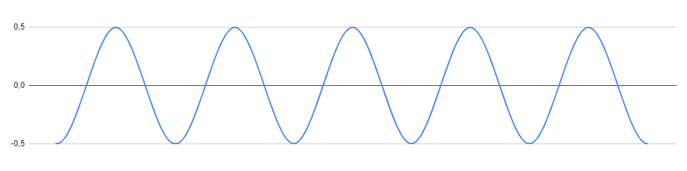
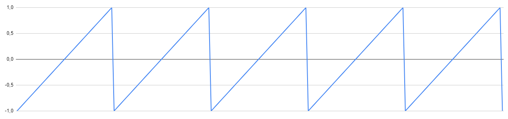
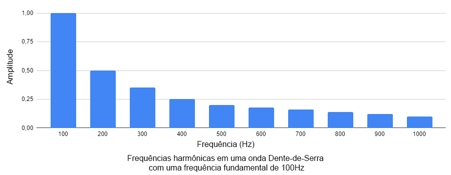
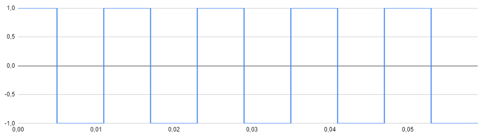
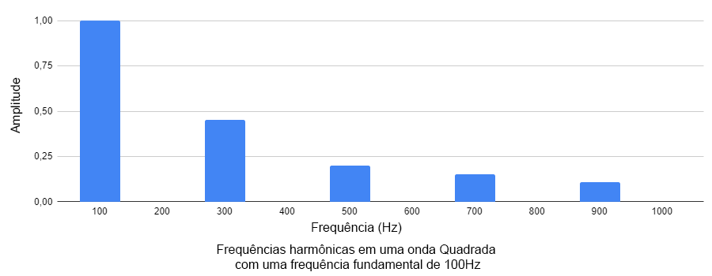
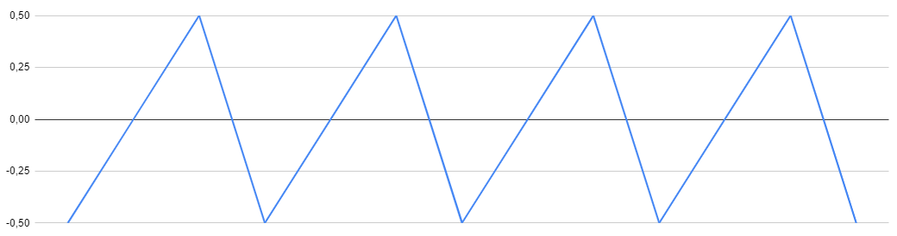
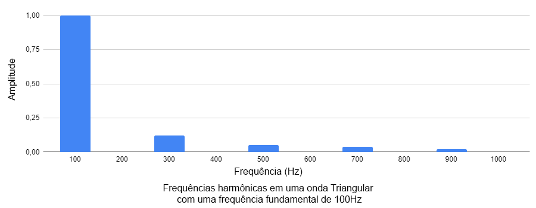

Ondas de som e osciladores
Sons são ondas de pressão que viajam pelo ar, ou algum outro meio, chegando a nossos ouvidos. Diferente das ondas do oceano, que se movem para cima e para baixo, ondas de pressão se movem para frente e para trás. Essas ondas então se movem para nossos ouvidos entrando e saindo, e percebemos isso como um som. Sintetização de som é a arte de criar sinais que, quando transformados em ondas sonoras por um alto-falante, pessoas acham interessante. Durante o percurso deste artigo iremos explorar dispositivos que criam e modificam sinais usados para sintetizar o som.
O primeiro desses dispositivos que iremos considerar é chamado de oscilador. Um oscilador gera um sinal consistente que se repete. Sinais de osciladores e outras fontes são usadas para controlar o movimento dos cones no nosso alto-falante, que fazem as ondas sonoras que chegam aos nossos ouvidos. Se você amarrar uma ponta de uma corda em uma maçaneta, se afastar um pouco e balançar a outra ponta da corda pra cima e pra baixo bem rápido, você vai estar fazendo mais ou menos a mesma coisa que um oscilador, tendo como diferença que você está balançando uma corda, enquanto um oscilador faz isso com um sinal de áudio.

Sinais de áudio são normalmente representados em um gráfico onde o eixo horizontal representa o tempo e o eixo vertical representa a pressão no sinal. Isso é chamado de representação do áudio no domínio do tempo. Gráficos no domínio do tempo são como instruções para alto-falantes sobre como mover-se para dentro e para fora. Quando o gráfico lê 1, o cone do alto falante é empurrado completamente para fora, e quando lê -1, o cone é puxado completamente para dentro. Esse movimento cria uma onda de pressão no ar que escutamos como um som, se um cone do alto-falante se mover para dentro e para fora de acordo com o gráfico acima, ele vai fazer o som de um tambor.
Frequência e tom
A quantidade de vezes que uma onda de som se move para dentro e para fora é chamado de frequência. Frequência é medida em ciclos por segundo. O tamanho de um ciclo único de uma forma de onda é a quantidade de tempo até que a forma de onda comece a se repetir. Pessoas normalmente escutam um aumento da frequência de uma onda sonora conforme ela aumenta de tom. Quando a frequência de um oscilador é dobrada, o tom sobe uma oitava. Por exemplo, um oscilador gerando um sinal que se repete a cada segundo 440 vezes vai ter o mesmo tom que um Lá médio em um piano. Um oscilador gerando um sinal que se repete a cada segundo 880 vezes vai ter o mesmo tom que um Lá uma oitava acima do Lá médio. Uma forma comum de dizer “Ciclos por segundo ” é usando a unidade de medida “Hertz”, abreviada como “Hz”.
Formas de onda básicas
Existem 4 diferentes tipos de de formas de onda básicas, como ilustrados aqui.
Senoidal
Ondas senoidais são parecidas com com uma onda em um recipiente com água, movendo para cima e para baixo sem nenhum início ou final abrupto. Sons similares com uma onda senoidal incluem assobios, ar se movendo através da abertura de uma garrafa vazia, e toque de um diapasão.


Ondas senoidais também podem ser adicionadas entre si para gerarem ondas diferentes, como visto nas imagens acima. Caso ondas senoidais de mesma frequência e amplitude inversa sejam adicionadas, o resultado será nulo.
Dente-de-Serra
Ondas de dente-de-serra possuem um som forte e claro de zumbido. Uma onda Dente-de-Serra pode ser feita adicionando séries de ondas senoidais com diferentes frequências e volumes. A frequência da primeira e mais barulhenta onda senoidal é o que escutamos como a frequência da Dente-de-Serra resultante. Isso é chamado de frequência fundamental. Cada uma das outras ficam progressivamente mais quietas, ondas senoidais que fazem uma Dente-de-Serra são múltiplos integrais da frequência fundamental. Essas frequências são chamadas harmônicas.
Por exemplo, uma onda dente-de-serra ideal com uma frequência fundamental de 100Hz teria harmônicas em 200Hz, 300Hz, 400Hz e por ai em diante, com cada harmônica mais quieta que a última. Devido ao fato que a onda Dente-de-Serra possui cada integral harmônica da frequência fundamental, ela possui um som rico aos nossos ouvidos. A frequência fundamental define o tom do som, enquanto as harmônicas mudam o timbre do som sem afetar o tom.
Quadrangular
Assim como as ondas dente-de-serra, ondas quadrangulares podem ser geradas usando ondas senoidais com um volume decrescente. Entretanto, a onda quadrangular só possui harmônicas impares. Ondas quadrangulares podem ser encontradas no áudio de jogos antigos da Nintendo, que eram feitos quase que inteiramente de ondas quadrangulares.
Triangular
Ondas triangulares tem um som parecido com algo entre uma onda senoidal e uma onda quadrangular. E assim como as ondas quadrangulares, elas possuem apenas as harmônicas ímpares. Elas se diferem das ondas quadrangulares pois o volume de cada harmônica adicionada diminui mais rapidamente.
